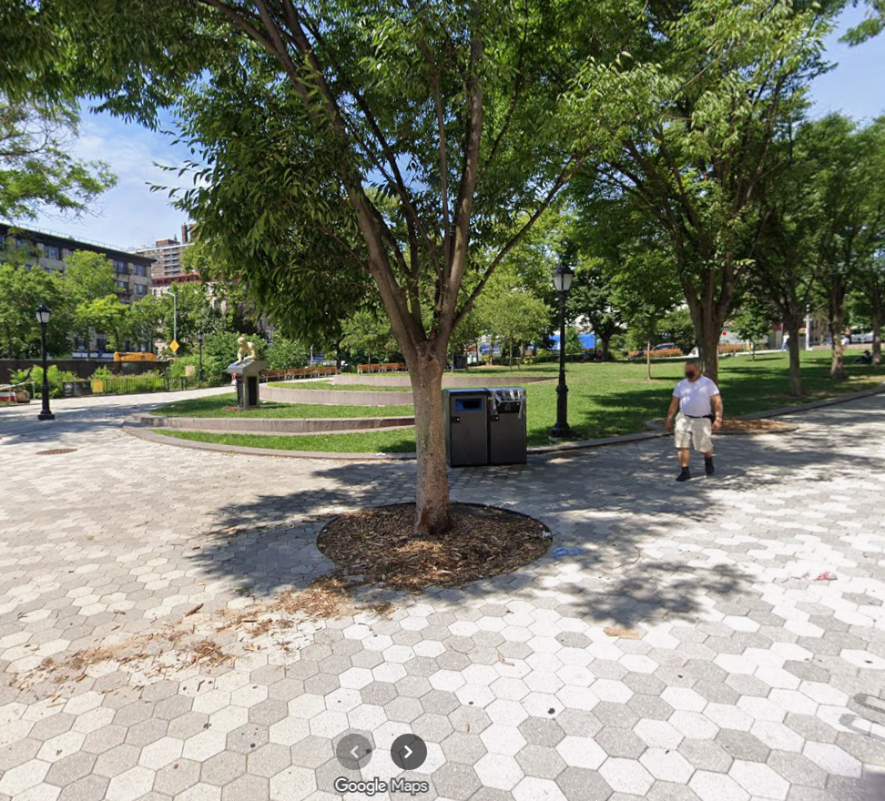
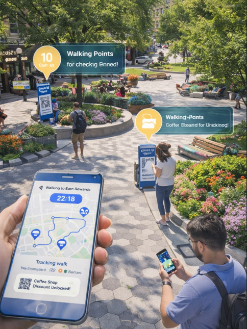

Platform Overview
This functional concept website is designed to make the AI Walk-to-Earn Harlem idea feel real and usable. Instead of presenting only static proposal text, the platform organizes the concept into separate tabs for planning, comparison, route personalization, business participation, and the user app experience. The result is a more user-friendly and visually appealing system that communicates how the program would actually work in practice.
What the platform achieves
- Encourages walking with verified routes and reward checkpoints
- Supports local businesses through measurable foot traffic and coupons
- Improves the plaza experience through comfort, safety, and destination points
- Gives stakeholders a clearer picture of how the system works end to end
Core system flow
Chooses route length, pace, and reward preference.
Suggests the safest and most engaging path through the plaza.
Landmark checkpoints verify real plaza engagement.
Business coupon or points appear instantly in the app.
Proposal Home
AI Walk-to-Earn Harlem is a public-space redesign concept that combines artificial intelligence, verified walking routes, and landmark QR checkpoints to encourage pedestrian activity in Harlem Plaza. The platform rewards users for walking through safe, engaging paths and for visiting small businesses positioned along the route network.
Goal: create a system that improves public health, strengthens community engagement, and helps local businesses benefit from intentional foot traffic. Essential question: how can artificial intelligence encourage people to walk more while supporting local businesses in a pedestrian plaza?
The problem
Many pedestrian plazas are used as pass-through spaces rather than destinations. People move through quickly, stay for short periods, and often have little reason to interact with local businesses. This leads to lower engagement, weaker economic spillover, and missed opportunities for community activity.
This project responds to those issues by making walking purposeful. Users are not only encouraged to move more, but also guided toward meaningful destinations that benefit both the public space and the local economy.
Site / context
The Harlem Plaza site is analyzed through movement patterns, comfort, safety, accessibility, use patterns, and business activity. Direct path behavior suggests that current circulation does not encourage long stays. Areas with shade, seating, and visibility create stronger comfort zones, while nearby businesses offer a real opportunity for checkpoint-based incentives.
In this system, landmark placements turn underused corners and business edges into active destinations.
Option 1
Route rewardRewards are tied only to verified walking routes. This improves movement but does not strongly connect users to specific landmarks or businesses.
Option 2
Business check-inUsers earn rewards by reaching business zones. This supports commerce, but it relies too heavily on proximity instead of full plaza engagement.
Option 3
Final choiceStructured walking routes plus landmark QR scans near businesses provide the strongest verification, the best user experience, and the clearest business value.
Before / After Gallery
This tab gives the platform a dedicated comparison view so users can clearly understand how the system changes the space. The “before” images show low-engagement conditions or underused areas, while the “after” images visualize AI-guided walking routes, checkpoints, comfort improvements, and stronger small-business integration.






Why this redesign works
The final redesign improves the plaza by turning passive movement into active participation. AI recommends optimized paths based on time, accessibility, shade, crowd levels, and user preferences. QR checkpoints near businesses verify that users truly visited the space, and the reward system makes exploration feel worthwhile instead of accidental.
Interactive Route Builder
This tab simulates how a real user-friendly version of the platform could generate different walking experiences. The controls below demonstrate how route recommendations can respond to time available, walking pace, accessibility needs, and reward preference.
20-Minute Discovery Route
A balanced route that prioritizes shade, moderate walking distance, and food rewards from businesses at natural pause points.
Business Participation Dashboard
Local businesses are a core part of the platform. This tab models what a participating shop might see: visits, scans, conversion trends, and what kind of promotion tier they are offering. It shows that the project is not just a pedestrian tool, but a measurable economic support system.
Harlem Shake
Tier 3 PremiumQR scans this week: 214
Estimated store visits: 89
Top reward: Free drink with purchase
Best time: 11am–2pm
Sylvia's Corner
Tier 2 StandardQR scans this week: 176
Estimated store visits: 72
Top reward: 15% off lunch combo
Best time: 12pm–3pm
Harlem Books
Tier 1 BasicQR scans this week: 121
Estimated store visits: 48
Top reward: 10% off select items
Best time: 4pm–6pm
Why businesses would join
- Visible weekly scan and visit data
- Time-of-day insights for promotions
- Reward tiers based on budget and goals
- Clearer ROI than traditional marketing guesses
Suggested business tools
- Upload and manage seasonal promotions
- Track scan-to-visit conversion rates
- See route prominence for premium participation
- Review anonymized foot traffic trends around the plaza
App Demo Experience
This mock app experience shows how the platform can be functional, intuitive, and visually clear. It demonstrates the real feeling of use: onboarding preferences, live route progress, checkpoint confirmation, and reward unlocks.
User Journey
From opening the app to claiming a reward
User selects time, walking mode, and reward preferences.
AI recommends a path based on safety, shade, comfort, and checkpoints.
The app buzzes when the user gets close to a landmark near a business.
QR scan confirms visit and unlocks a coupon or points instantly.
Live Engagement
Gamification keeps users coming back
- Weekly Harlem LeaderboardTop walkers
- 1. Maya710 pts
- 2. Andre645 pts
- 3. Jess598 pts